1.1 El Átomo y sus Partículas Subatómicas
El átomo es la unidad básica de la materia, compuesta por partículas subatómicas que son fundamentales para comprender su estructura y comportamiento. Las principales partículas subatómicas son los protones, neutrones y electrones. Los protones tienen una carga eléctrica positiva y se encuentran en el núcleo del átomo junto con los neutrones, que no tienen carga eléctrica. Los electrones, que tienen una carga negativa, orbitan alrededor del núcleo en diferentes niveles de energía.
La distribución de estas partículas subatómicas determina las propiedades y el comportamiento químico de un átomo. Los protones y neutrones, que constituyen el núcleo atómico, tienen una masa relativamente grande en comparación con los electrones, que tienen una masa mucho menor. Además, los electrones están distribuidos en capas o niveles de energía alrededor del núcleo, y cada nivel de energía puede contener un número máximo de electrones.
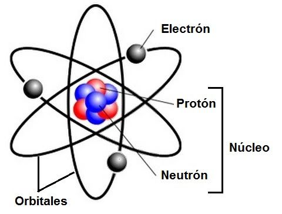1.1.1 Rayos Catódicos y Rayos Anódicos
Los rayos catódicos y anódicos son fenómenos observados en experimentos con tubos de descarga de gas a baja presión. Los rayos catódicos se producen cuando una corriente eléctrica pasa a través de un tubo de descarga entre un cátodo y un ánodo. Estos rayos, descubiertos por primera vez por Sir William Crookes, son corrientes de electrones que se desplazan desde el cátodo hacia el ánodo, generando un resplandor fluorescente en la parte opuesta al cátodo. Por Figura 1.1 Átomo y partículas subatómicas otro lado, los rayos anódicos son corrientes de iones positivos que se desplazan desde el ánodo hacia el cátodo en el tubo de descarga.
Los rayos catódicos jugaron un papel crucial en el descubrimiento del electrón por parte de J.J. Thomson en 1897. Este descubrimiento condujo al desarrollo del modelo atómico de Thomson, que propuso que los electrones estaban incrustados en una esfera de carga positiva, similar a las pasas en un pudín.
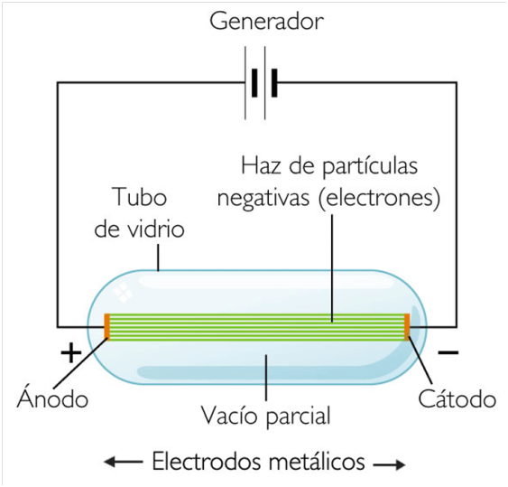1.1.2 Radiactividad
La radiactividad es el fenómeno por el cual ciertos núcleos atómicos inestables se desintegran espontáneamente, emitiendo partículas subatómicas o radiación electromagnética. Este proceso fue descubierto por Henri Becquerel en 1896 cuando observó que las sales de uranio emitían radiación que podía impresionar una placa fotográfica, incluso en ausencia de cualquier fuente de energía externa.
Existen tres tipos principales de radiación ionizante emitida durante la desintegración radiactiva: alfa (α), beta (β) y gamma (γ). La radiación alfa consiste en núcleos de helio (dos protones y dos neutrones), la radiación beta puede ser una partícula beta (un electrón) o un positrón, y la radiación gamma es una forma de radiación electromagnética de alta energía.
La radiactividad tiene una amplia gama de aplicaciones en medicina, como en la tomografía por emisión de positrones (PET) y en la radioterapia para el tratamiento del cáncer. También se utiliza en la datación por radiocarbono para determinar la edad de objetos arqueológicos y en diversas aplicaciones industriales, como en la inspección de materiales y en la generación de energía nuclear. Sin embargo, la radiactividad también puede presentar riesgos para la salud y el medio ambiente si no se maneja adecuadamente.
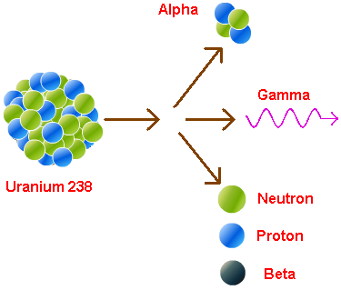1.2 Base experimental de la teoría cuántica
La base experimental de la teoría cuántica se desarrolló a lo largo del siglo XX a partir de una serie de experimentos que desafiaron las concepciones clásicas de la física y llevaron al desarrollo de un nuevo marco teórico para comprender el mundo subatómico. Estos experimentos proporcionaron evidencia crucial que respaldó la emergente teoría cuántica y ayudaron a sentar las bases de la física moderna. A continuación, exploraremos algunos de los experimentos más importantes que contribuyeron a la base experimental de la teoría cuántica:
1. Efecto Fotoeléctrico: Uno de los experimentos más influyentes en el desarrollo de la teoría cuántica fue el efecto fotoeléctrico, observado por primera vez por Heinrich Hertz en 1887 y explicado por Albert Einstein en 1905. En este experimento, se observó que cuando la luz incide sobre ciertos materiales, como metales, se liberan electrones de la superficie de estos materiales. Einstein propuso que la luz está compuesta por partículas discretas de energía llamadas fotones, y que la energía de estos fotones determina la energía cinética de los electrones emitidos. Este experimento proporcionó evidencia directa de la naturaleza cuántica de la luz y llevó al desarrollo de la mecánica cuántica.
2. Experimento de la Doble Rendija: El experimento de la doble rendija es un experimento clásico que demuestra el comportamiento ondulatorio de las partículas subatómicas, como los electrones y los fotones. En este experimento, desarrollado por Thomas Young en 1801, se observa un patrón de interferencia cuando la luz o los electrones pasan a través de dos rendijas estrechas. Este patrón de interferencia solo se puede explicar mediante la teoría ondulatoria de la luz y la materia, lo que sugiere que las partículas subatómicas exhiben comportamientos tanto de onda como de partícula.
3. Experimento de Franck-Hertz: El experimento de Franck-Hertz, realizado por James Franck y Gustav Hertz en 1914, proporcionó evidencia experimental de la cuantización de la energía en átomos. En este experimento, los electrones se aceleran a través de un campo eléctrico y colisionan con átomos de mercurio gaseoso. Se observa que los electrones solo pueden transferir energía a los átomos en cantidades discretas, lo que indica que la energía de los electrones está cuantizada. Este experimento confirmó la teoría cuántica de Planck y la mecánica cuántica de Bohr.
4. Experimento de Stern-Gerlach: El experimento de Stern-Gerlach, realizado por Otto Stern y Walther Gerlach en 1922, proporcionó evidencia experimental de la cuantización del momento angular en partículas subatómicas. En este experimento, un haz de átomos de plata se hace pasar a través de un campo magnético no uniforme. Se observa que los átomos se dividen en dos haces distintos en lugar de formar una banda continua, lo que indica que el momento angular de los átomos está cuantizado.
Este experimento fue fundamental para el desarrollo de la teoría cuántica y la comprensión de las propiedades fundamentales de las partículas subatómicas. Estos son solo algunos ejemplos de los experimentos clave que contribuyeron a la base experimental de la teoría cuántica. A lo largo del siglo XX, se realizaron numerosos experimentos más que proporcionaron evidencia adicional de los principios cuánticos y ayudaron a consolidar la teoría cuántica como uno de los pilares fundamentales de la física moderna.
1.2.1 Teoría Ondulatoria de la Luz
La teoría ondulatoria de la luz es una de las principales teorías que describen la naturaleza de la luz. Esta teoría postula que la luz se propaga en forma de ondas electromagnéticas, es decir, que está compuesta por campos eléctricos y magnéticos que oscilan perpendicularmente entre sí y en la dirección de propagación. La teoría ondulatoria explica una amplia gama de fenómenos observados en la luz, como la reflexión, la refracción, la interferencia y la difracción. Una de las primeras pruebas experimentales de la naturaleza ondulatoria de la luz fue el experimento de la doble rendija realizado por Thomas Young en 1801. En este experimento, Young demostró que la luz exhibe patrones de interferencia cuando pasa a través de dos rendijas estrechas, lo que indica que la luz tiene propiedades ondulatorias. Esta observación fue fundamental para el desarrollo de la teoría ondulatoria de la luz. La teoría ondulatoria también proporciona una explicación para el fenómeno de la difracción, que es la tendencia de las ondas de luz a doblarse alrededor de obstáculos y a través de aberturas.
Además, explica la reflexión y la refracción de la luz en superficies y medios diferentes, como el cambio de dirección que experimenta un rayo de luz al pasar de un medio a otro, como del aire al agua.
A pesar de la validez y la utilidad de la teoría ondulatoria de la luz para explicar muchos fenómenos observados, también hay casos en los que la naturaleza corpuscular de la luz es evidente. Este aspecto dual de la luz, manifestado tanto en sus propiedades ondulatorias como en su comportamiento de partícula (fotones), fue un desafío fundamental para la comprensión de la naturaleza de la luz y condujo al desarrollo de la mecánica cuántica.
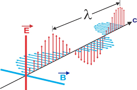1.2.2 Radiación del Cuerpo Negro y Teoría de Planck
La radiación del cuerpo negro es la radiación electromagnética emitida por un cuerpo negro ideal, que absorbe toda la radiación incidente sin reflejarla. El estudio de la radiación del cuerpo negro llevó al desarrollo de la teoría cuántica y a la formulación de la teoría de Planck por Max Planck en 1900.
Planck propuso que la energía emitida o absorbida por un oscilador (como los átomos emisores de radiación) solo puede ocurrir en múltiplos enteros de un valor mínimo, llamado cuantos de energía. Esta idea revolucionaria resolvió el problema del ultravioleta catastrófico, que era la incapacidad de las teorías clásicas de la física para predecir la radiación emitida por un cuerpo negro a altas frecuencias.
La teoría de Planck sentó las bases para el desarrollo de la mecánica cuántica y la comprensión de los fenómenos cuánticos. Además, proporcionó una explicación precisa de la radiación del cuerpo negro en todas las longitudes de onda, lo que llevó a un mejor entendimiento de la naturaleza discreta de la energía y la materia en el nivel subatómico.
La teoría de Planck también tuvo importantes implicaciones en la comprensión de la naturaleza de la luz y la relación entre la energía de un fotón y su frecuencia. La ecuación E=hf, donde E es la energía de un fotón, h es la constante de Planck y f es la frecuencia de la radiación, se convirtió en un pilar fundamental de la física cuántica y ayudó a explicar una amplia gama de fenómenos observados en la naturaleza.
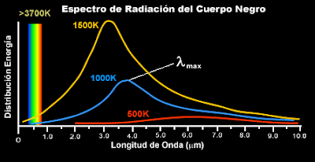1.2.3 Efecto Fotoeléctrico
El efecto fotoeléctrico es un fenómeno en el cual la luz incidente (fotones) expulsa electrones de una superficie metálica. Este fenómeno fue observado por primera vez por Heinrich Hertz en 1887 y posteriormente investigado en detalle por Albert Einstein en 1905.
Según la teoría del efecto fotoeléctrico de Einstein, la luz está compuesta por partículas discretas de energía llamadas fotones. Cuando un fotón de suficiente energía golpea un material, puede transferir su energía a un electrón en la superficie del material, liberándolo y creando una corriente eléctrica. La energía cinética de los electrones liberados depende de la frecuencia de la luz incidente, no de su intensidad.
El efecto fotoeléctrico tiene importantes aplicaciones en tecnología moderna, como en celdas solares fotovoltaicas, dispositivos de imagen y detectores de luz.

1.2.4 Espectros de Emisión y Series Espectrales
Los espectros de emisión son patrones de líneas brillantes que aparecen cuando los átomos emiten luz después de ser excitados por una fuente de energía externa, como una descarga eléctrica o una llama. Cada elemento químico tiene un conjunto único de líneas espectrales que son características de ese elemento. Estas líneas espectrales son el resultado de transiciones electrónicas específicas entre diferentes niveles de energía en el átomo.
Las series espectrales son secuencias específicas de líneas espectrales que corresponden a diferentes tipos de transiciones electrónicas en un átomo. Por ejemplo, la serie de Balmer en el espectro del hidrógeno corresponde a transiciones de electrones desde niveles de energía superiores a n=2 hacia el nivel de energía n=2. Las series espectrales son útiles para identificar elementos químicos y para estudiar la estructura de los átomos y sus niveles de energía.
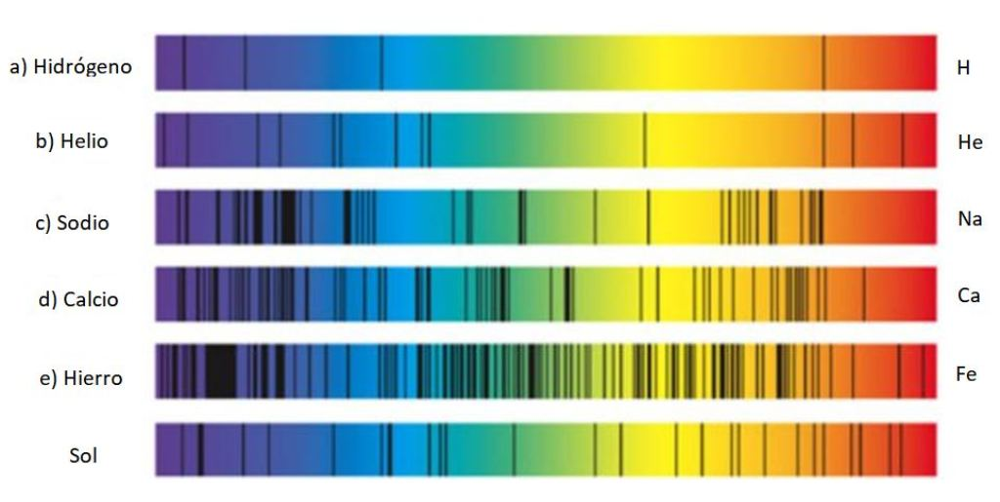1.3 Teoría Atómica de Bohr
La teoría atómica de Bohr, propuesta por el físico danés Niels Bohr en 1913, revolucionó nuestra comprensión de la estructura atómica al incorporar ideas cuánticas y establecer un modelo que explicaba de manera satisfactoria las líneas espectrales del átomo de hidrógeno.
Postulados principales: Orbitales Estacionarios: Bohr postuló que los electrones en un átomo ocupan órbitas circulares estacionarias alrededor del núcleo, sin irradiar energía. Cada órbita tiene un nivel de energía específico y solo ciertos valores discretos de energía son permitidos para los electrones.
Emisión y Absorción de Energía: Según la teoría de Bohr, un electrón puede saltar de una órbita a otra emitiendo o absorbiendo energía en forma de fotones. La energía emitida o absorbida está cuantizada y está relacionada con la diferencia de energía entre las órbitas inicial y final.
Condiciones de Estabilidad: Bohr estableció condiciones para la estabilidad de las órbitas permitidas, postulando que un electrón permanece estable en una órbita si su energía cinética (debida a su movimiento orbital) se equilibra exactamente con su energía potencial (debida a su atracción hacia el núcleo).
1.3.1 Teoría Atómica de Bohr-Sommerfeld
Arnold Sommerfeld extendió la teoría de Bohr al introducir órbitas elípticas y orbitales cuánticos adicionales, lo que permitió explicar con mayor precisión el espectro de átomos con más de un electrón. Sommerfeld también introdujo el concepto de números cuánticos adicionales para describir las propiedades de los electrones en un átomo.
Principales Contribuciones: Orbitales Estacionarios: Bohr postuló que los electrones en un átomo ocupan órbitas circulares estacionarias alrededor del núcleo, sin irradiar energía. Cada órbita tiene un nivel de energía específico y solo ciertos valores discretos de energía son permitidos para los electrones.
Órbitas Elípticas: Sommerfeld propuso que las órbitas de los electrones en un átomo pueden ser elípticas en lugar de circulares, lo que proporciona una descripción más precisa de la distribución espacial de los electrones.
Introducción de Números Cuánticos: Sommerfeld introdujo los números cuánticos secundarios, como el número cuántico azimutal (l), que describe la forma de la órbita del electrón, y el número cuántico magnético (m), que describe la orientación de la órbita en el espacio.
Explicación del Espectro Atómico Complejo: La teoría de Bohr-Sommerfeld permitió una explicación más completa de los espectros atómicos complejos, como los de los átomos de helio y los iones de hidrógeno, que presentan líneas espectrales adicionales debido a la interacción entre los electrones.
1.4 Teoría Cuántica
La teoría cuántica es un pilar fundamental de la física moderna que describe el comportamiento de las partículas subatómicas. En esta sección, exploraremos varios aspectos clave de la teoría cuántica, desde el principio de dualidad hasta la descripción de los orbitales atómicos.
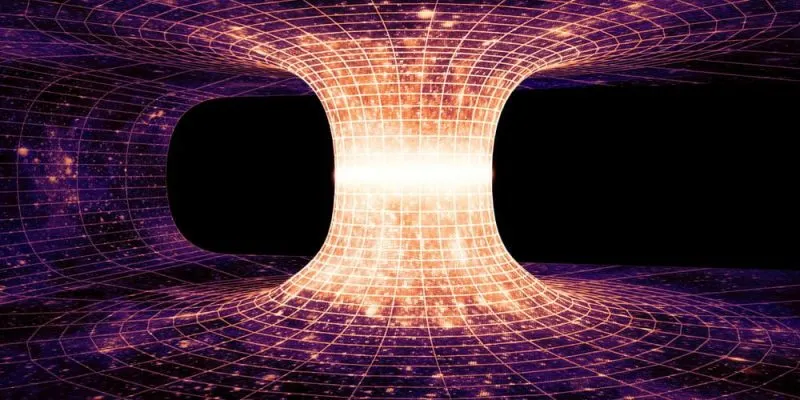1.4.1 Principio de dualidad. Postulado de De Broglie
El principio de dualidad, propuesto por Louis de Broglie en 1924, sugiere que las partículas, como los electrones, pueden exhibir tanto propiedades de partícula como de onda. De Broglie propuso que cualquier partícula con momento tiene asociada una onda, y su longitud de onda está inversamente relacionada con su momento lineal según la relación de De Broglie:
λ=ph
Donde:
λ es la longitud de onda de la partícula.
h es la constante de Planck.
p es el momento lineal de la partícula.
Este principio sugiere que las partículas, a nivel subatómico, no se comportan como partículas clásicas con una posición y velocidad definidas, sino que también tienen propiedades ondulatorias.
1.4.2 Principio de incertidumbre de Heisenberg
El principio de incertidumbre, formulado por Werner Heisenberg en 1927, establece que no se pueden conocer simultáneamente con precisión la posición y el momento lineal de una partícula subatómica. Matemáticamente, se expresa como:
Δx⋅Δp ≥ ℏ/2
Donde Δx es la incertidumbre en la posición de la partícula, Δp es la incertidumbre en su momento lineal y ℏ es la constante reducida de Planck (ℎ/2π). Este principio subraya la naturaleza probabilística de la mecánica cuántica y establece límites fundamentales en nuestra capacidad para medir las propiedades de las partículas.
1.4.3 Ecuación de onda de Schrödinger
La ecuación de Schrödinger es la ecuación fundamental de la mecánica cuántica y describe la evolución temporal de la función de onda de un sistema cuántico. En su forma más general, la ecuación de Schrödinger es una ecuación diferencial parcial que depende del sistema particular bajo consideración.
La ecuación de Schrödinger independiente del tiempo para una partícula en un campo de potencial es:
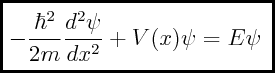Donde ℏ es la constante reducida de Planck, m es la masa de la partícula, V(x) es el potencial en función de la posición, E es la energía total de la partícula y ψ es la función de onda.
Esta ecuación proporciona una descripción cuantitativa de la evolución del estado cuántico de una partícula en un sistema dado.
1.4.3.1 Significado físico de Ψ²
La función de onda ψ describe el estado cuántico de una partícula y su módulo al cuadrado ψ2 proporciona la densidad de probabilidad de encontrar la partícula en una posición específica en un instante de tiempo dado. Cuanto mayor sea el valor de ψ2 en una región del espacio, mayor será la probabilidad de encontrar la partícula allí.
Ejercicio: Calcular la densidad de probabilidad de encontrar un electrón en un átomo de hidrógeno en su estado fundamental en un radio de 5.0×10−11 m5.0×10−11m del núcleo. Para calcular la densidad de probabilidad de encontrar un electrón en un átomo de hidrógeno en su estado fundamental en un radio de 5.0×10−11 m5.0×10−11m del núcleo, primero necesitamos obtener la función de onda radial del electrón en el átomo de hidrógeno. En el átomo de hidrógeno, la función de onda radial R(r) del electrón en su estado fundamental (n=1) está dada por:
Para el átomo de hidrógeno, m es la masa del electrón, e es la carga del electrón y 0ϵ0 es la permitividad del vacío.
Dado que estamos interesados en la densidad de probabilidad en un radio específico r=5.0×10−11 m, evaluaremosR(r) en este punto y luego calcularemos ∣ψ∣2 para obtener la densidad de probabilidad.
Por lo tanto, la densidad de probabilidad de encontrar un electrón en un átomo de hidrógeno en su estado fundamental en un radio de 5.0×1011m del núcleo es aproximadamente 2.76×1020 m3
1.4.3.2 Números cuánticos y orbitales atómicos
Los números cuánticos son valores numéricos que describen los estados cuánticos de un sistema cuántico. Para los electrones en un átomo, los números cuánticos incluyen el número cuántico principal n, el número cuántico azimutal l, el número cuántico magnético m, el número cuántico de espín S.Los orbitales atómicos son regiones del espacio donde hay una alta probabilidad de encontrar un electrón. Están caracterizados por los números cuánticos n, l y m.
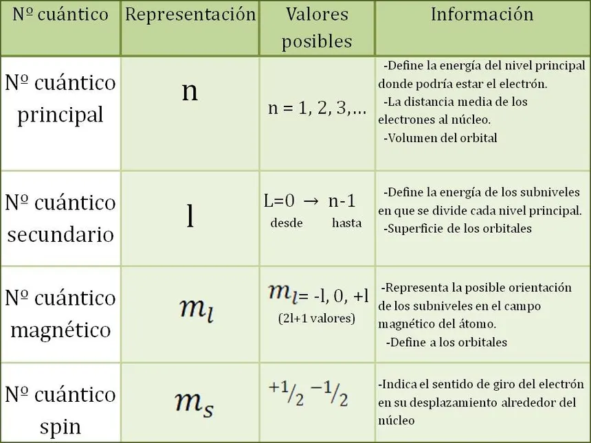1.5 Distribución Electrónica en Sistemas Polielectrónicos
En los átomos con más de un electrón, la distribución de los electrones en los diferentes orbitales se rige por una serie de principios cuánticos. Estos principios son fundamentales para entender cómo se organizan los electrones en los átomos y, por ende, para comprender la estructura electrónica de los elementos y su ubicación en la tabla periódica.
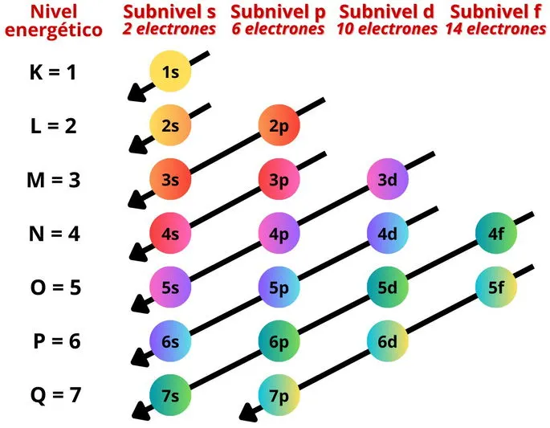1.5.1 Principio de Aufbau
El principio de Aufbau establece que los electrones llenan los orbitales atómicos comenzando por los de menor energía y ascendiendo gradualmente a los de mayor energía. Esto significa que los electrones ocupan primero los orbitales de menor nivel de energía antes de pasar a los niveles de energía más altos.
Ejercicio: Dado el átomo de oxígeno (O), escribe su configuración electrónica siguiendo este principio.
Solución: El átomo de oxígeno tiene 8 electrones. Siguiendo el principio de Aufbau, llenamos los orbitales en orden de energía:
1.5.2 Principio de Exclusión de Pauli
El principio de exclusión de Pauli establece que en un átomo ningún electrón puede tener los mismos cuatro números cuánticos. Esto significa que dos electrones en un átomo deben tener al menos un número cuántico diferente.
Ejercicio: ¿Cuál es la configuración electrónica del átomo de carbono (C) y cuántos electrones puede tener el orbital 2p?
Solución: La configuración electrónica del carbono es El orbital 2p puede contener un máximo de 6 electrones, dos en cada subnivel
1.5.3 Principio de Hund
El principio de máxima multiplicidad de Hund establece que cuando se llenan orbitales degenerados (misma energía), los electrones se distribuyen para maximizar el número de electrones con espines paralelos antes de que se emparejen. Ejercicio: Dado el átomo de nitrógeno (N), escribe su configuración electrónica y muestra cómo se aplicaría el principio de máxima multiplicidad de Hund para llenar los orbitales 2p.
Ejercicio: Dado el átomo de nitrógeno (N), escribe su configuración electrónica y demuestra cómo se aplica este principio en el llenado de los orbitales 2p.
Solución: La configuración electrónica del nitrógeno es Aplicando el principio de Hund, los electrones se distribuyen en los tres orbitales 2p con espines paralelos antes de que se emparejen. Entonces, la configuración sería 2p 3con tres electrones con espines paralelos.
1.5.4 Configuración Electrónica y Clasificación
La configuración electrónica de los elementos se refiere a la distribución de electrones en los diferentes niveles y subniveles de energía. Esta configuración sigue los principios mencionados anteriormente y es fundamental para entender las propiedades y el comportamiento químico de los elementos. Además, la configuración electrónica de los elementos está relacionada con su ubicación en la tabla periódica.
Ejercicio: Escribe la configuración electrónica del elemento sodio (Na) y explica cómo su configuración está relacionada con su ubicación en la tabla periódica.
Solución: La configuración electrónica del sodio es 1𝑠2 2𝑠2 2𝑝6 3𝑠1 Está ubicado en el grupo 1 (metales alcalinos) de la tabla periódica, lo que indica que tiene un electrón de valencia en su nivel de energía más externo.
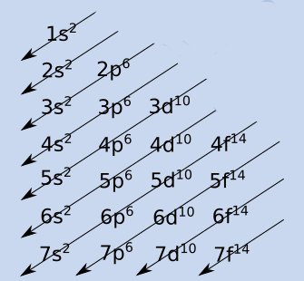1.5.5 Principios de Radiactividad
La radiactividad es un fenómeno natural en el que los núcleos de ciertos elementos inestables, conocidos como radioisótopos, experimentan una desintegración espontánea, transformándose en otros elementos más estables. Este proceso de desintegración nuclear conlleva la emisión de partículas subatómicas y/o radiación electromagnética, lo que se conoce como radiación ionizante.
Existen tres tipos principales de desintegración radiactiva:
- Decaimiento Alfa (α): Durante el decaimiento alfa, el núcleo inestable emite una partícula alfa, que consiste en dos protones y dos neutrones (equivalente a un núcleo de helio-4). Este tipo de desintegración reduce el número atómico del elemento en dos y su masa en cuatro.
- Decaimiento Beta (β): El decaimiento beta implica la emisión de una partícula beta, que puede ser un electrón (β-) o un positrón (β+). En el caso del β-, un neutrón se convierte en un protón dentro del núcleo, liberando un electrón y un antineutrino. En el β+, un protón se convierte en un neutrón, liberando un positrón y un neutrino. El decaimiento beta afecta al número atómico del elemento, pero no a su masa.
- Decaimiento Gamma (γ):La desintegración gamma es la emisión de radiación electromagnética de alta energía, conocida como rayos gamma. Este tipo de desintegración generalmente acompaña a los procesos de decaimiento alfa y beta, y ayuda a estabilizar el núcleo después de la emisión de partículas.
El estudio de la radiactividad es de gran importancia en diversos campos, incluyendo la medicina (por ejemplo, en la radioterapia y la medicina nuclear), la geología (para la datación de rocas y minerales), la industria (en la detección de fallos y la esterilización) y la investigación científica (para estudiar la estructura del núcleo atómico y las interacciones nucleares).
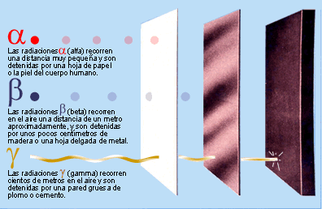1.6 Aplicaciones Tecnológicas de la Emisión Electrónica
La emisión electrónica de los átomos, que incluye fenómenos como la ionización y la emisión de electrones por efecto fotoeléctrico, tiene una amplia gama de aplicaciones tecnológicas en diversas áreas. Estas aplicaciones aprovechan la capacidad de los electrones para transportar energía y carga eléctrica, lo que las hace fundamentales en la electrónica, la medicina, la industria y otras áreas de la tecnología moderna.
Algunas de las aplicaciones más destacadas de la emisión electrónica de los átomos incluyen:
- Fotoceldas Solares: Las células fotovoltaicas convierten la energía luminosa en electricidad mediante el efecto fotoeléctrico. Cuando la luz incide sobre la superficie de un semiconductor, como el silicio, los fotones liberan electrones, generando una corriente eléctrica que puede ser utilizada como energía.
- Detectores de Radiación: Los detectores de radiación, como los tubos Geiger-Müller, utilizan la ionización producida por la radiación para detectar partículas cargadas y fotones de alta energía. Cuando una partícula cargada o un fotón ionizante atraviesa el detector, produce la liberación de electrones, que pueden ser detectados y cuantificados para medir la radiación.
- Microscopios Electrónicos: Los microscopios electrónicos utilizan haces de electrones en lugar de luz visible para obtener imágenes de alta resolución de muestras. Estos microscopios incluyen el microscopio electrónico de transmisión (TEM) y el microscopio electrónico de barrido (SEM), que aprovechan la emisión y dispersión de electrones para analizar la estructura y composición de materiales a escalas muy pequeñas.
- Celdas de Combustible: Las celdas de combustible convierten la energía química de un combustible, como el hidrógeno, en electricidad mediante reacciones electroquímicas. En estas celdas, la oxidación del combustible en el ánodo produce electrones libres y iones hidrógeno, que viajan a través de un electrolito hacia el cátodo, donde se combinan con oxígeno y electrones para formar agua, generando electricidad en el proceso.
- Radioterapia: En medicina, la emisión de electrones por efecto fotoeléctrico se utiliza en la radioterapia para tratar el cáncer. Los rayos X generados por un acelerador lineal ionizan los átomos de los tejidos tumorales, liberando electrones que dañan las células cancerosas y detienen su crecimiento.
- Láseres: Algunos láseres utilizan la emisión estimulada de electrones para producir luz coherente y de alta intensidad. En estos dispositivos, los átomos o moléculas excitados emiten fotones idénticos en fase, lo que genera un haz de luz láser con aplicaciones en la industria, la medicina, las comunicaciones y otras áreas.